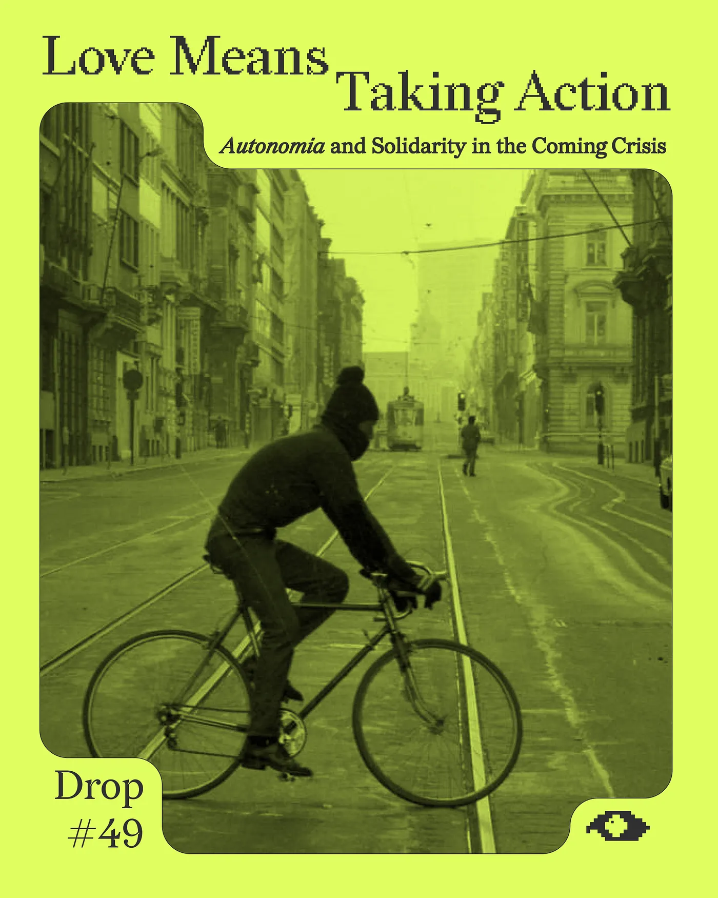
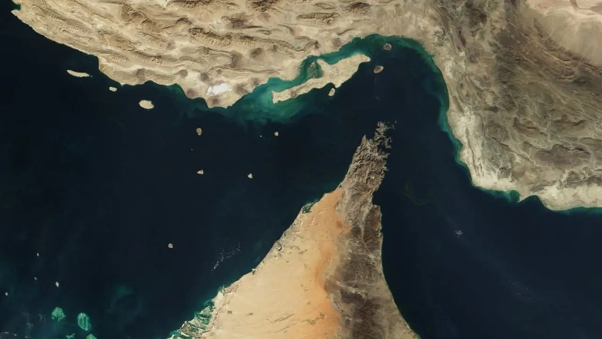
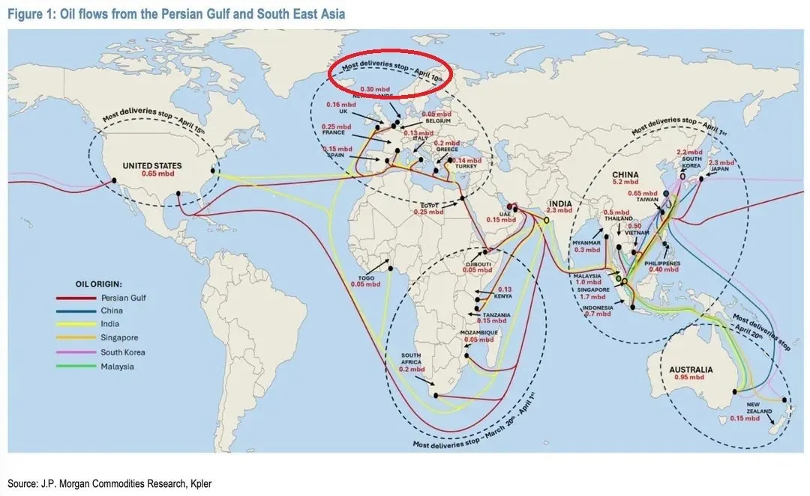
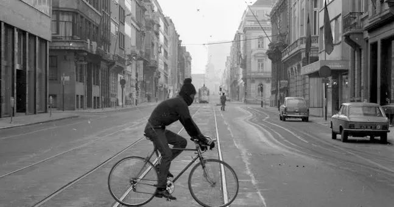
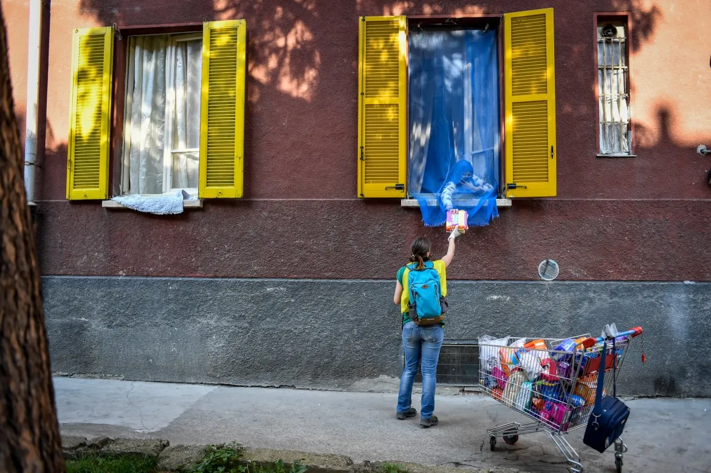
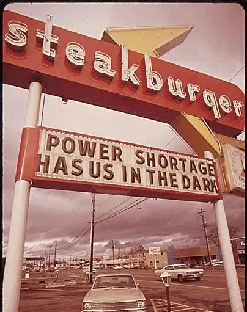
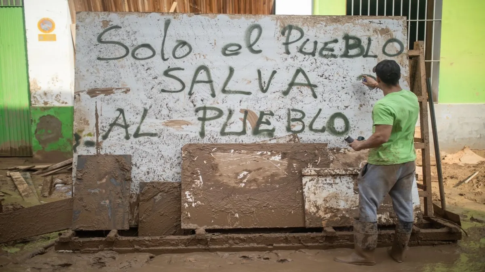
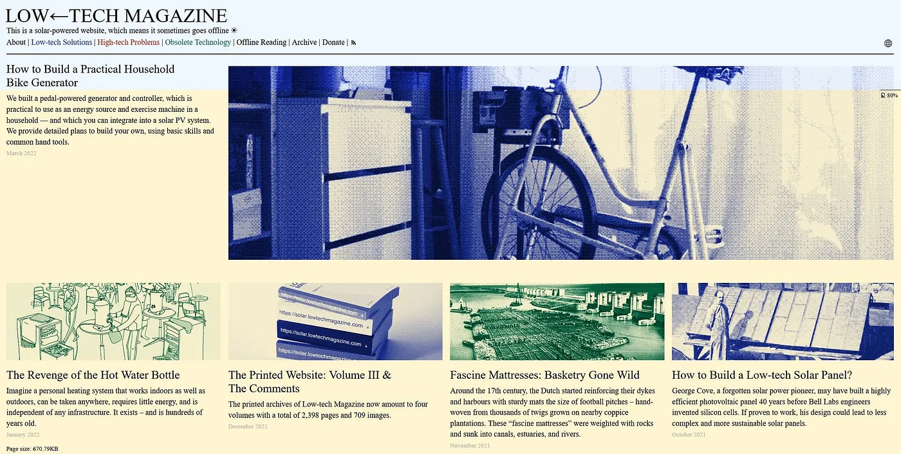

Drop #49 · April 7, 2026 · 19 min read
Autonomia and Solidarity in the Coming Crisis
Hey everyone (▰˘◡˘▰)
I’ll be honest: I’m worried. I think many of us are, even if we don’t say it. The energy crisis unfolding right now is enormous, and it’s moving fast, and the gap between what we know is coming and what we’re actually doing about it feels wider every day. I wrote this piece because I needed to think through that gap for myself, and because thinking alone didn’t feel like enough.
The idea is maybe too simple: an inventory of solidarity practices for the shock ahead. How have people organized in similar moments of crisis? I explore the legacy of Italian Autonomia and the Solidarity Brigades, and look at projects like community energy cooperatives, mesh networks, and bulk buying clubs. What can we start doing now, before the shockwave fully arrives in Europe? It’s a working document, a first attempt — allow it some naivety. It hopes to be useful.
Thanks to Erik Bordeleau for the conversations that shaped the conceptual backbone of this piece, especially around Autonomia and the idea of political LARPing. And to Marco, Simone, Matteo, and Frank for their suggestions and edits.

The Shock Before the Shock
He who controls the spice, controls the universe.
Dune
It looks like our generation is about to go through yet another socioeconomic shock. After the financial and debt crisis, after the pandemic, and the war in Ukraine, the unlawful US-Israel aggression against Iran is leading rapidly to the biggest energy crisis in the history of modern capitalism.
This is what it means to live through the polycrisis, the hegemonic transition, the great convergence, or whatever we want to call the present conjuncture. Layer onto that the fact that the world’s largest military powers are governed by a clique of messianic fascist pedophiles, and you have the present moment: the fire horse acceleration of 2026, second year of the new era.
A quick summary of the events. After the US-Israel hydra attacked Iran on February 28th, the Islamic Republic responded by declaring the Strait of Hormuz a closed combat zone. By mid-March, tanker traffic through the strait had collapsed by 80%, with only 10 vessel crossings recorded over a four-day period against a typical daily average of 70 to 80.

The Strait of Hormuz is the narrow passage between Iran and the Arabian Peninsula. Around 20% of global LNG exports, 20-30% of crude oil, and a third of all seaborne fertiliser trade normally pass through it, along with significant shares of global helium and sulphur supply. That flow is now essentially zero.
The biggest oil supply shock in history has now reached the one-month mark. To understand the scale: the closure is reducing global oil flows by some 11 million barrels a day, after accounting for interventions aimed at offsetting the loss. That leaves a roughly 9 million-barrel shortfall: a “gap” that is more than the oil consumption of the UK, France, Germany, Spain, and Italy combined. The Brent crude futures are up almost 50% since the start of hostilities, and European natural gas benchmarks are nearly 75% higher. The International Energy Agency has authorized the release of 400 million barrels from strategic reserves, but the IEA itself had to admit that this won’t be enough. As Bloomberg reports, one message was repeated over and over in closed rooms with oil and gas traders, executives, and brokers: the world still hasn’t grasped the severity of the situation.
The situation is even more extreme for liquefied natural gas (LNG). The Strait typically accounts for about a fifth of global LNG supply, and unlike oil, there are no alternative routes to get the gas to market and very few strategic stockpiles to cushion the shortfall. Parts of the world’s biggest LNG plant have already sustained missile damage, which owner QatarEnergy warned will take up to five years to repair.
It really is brutal arithmetic: the oil stops flowing, the fuel prices spike, and then, in a snowball effect, transport, food, and everything we consume.
Moreover, the fertiliser supply (also transiting usually through Hormuz) tightens during the planting season. With roughly 40% of fertiliser exports at risk, actual harvest declines are a real possibility. Each link in the chain is visible before it snaps. What registers as a price shock in Europe will become a food shortage crisis across import-dependent regions of the Global South. If the Strait stays closed too far into the second quarter, oil could reach $170 a barrel, roughly doubling the impact on inflation and growth. This is how everything can collapse.
As you may have noticed, I’m not mentioning the military events of the ongoing conflict, because, for what we’re talking about, they don’t really matter. Even if the war stops now (and we all hope it stops soon), the ripple effect is already at play.
The shockwave is hitting Asia first and hardest. Between 60 and 75% of the crude oil imported by Japan, South Korea, and Taiwan transits through the Strait (data are from the Gulf International Forum). For South and Southeast Asia, the numbers are worse: India imports between 85 and 90% of its crude oil, Pakistan roughly 85%, and Bangladesh 95%.
As CNN reports, the Philippines has declared a state of national energy emergency. South Koreans have been told to take shorter showers and charge their phones during the day. Japan is beginning its largest-ever release of oil reserves. Pakistan has told cricket fans to watch games from home to preserve fuel. Hundreds of gas stations in Australia have reported fuel shortfalls, and just this morning, the Australian PM addressed the nation to discuss energy austerity measures. Carriers have canceled flights from Vietnam to New Zealand. China has banned the export of diesel, gasoline, and aviation fuel, forcing Southeast Asian buyers to scramble for alternatives — and in many cases, to restart decommissioned coal plants to keep the lights on.

And it’s heading West. Fuel crunches hitting Asia will soon start spreading to Europe, which is likely to face surging prices and is at risk of diesel shortages in the coming weeks. As Politico reported this week, the EU energy commissioner Dan Jørgensen held an extraordinary meeting with the bloc’s 27 energy ministers, and his recommendations had the flavour of March 2020 all over again: work from home where possible, reduce highway speed limits, encourage public transport, and increase car sharing.
Isabella Weber’s recent piece in the New Statesman maps the sequence of what comes next: inflation, redistribution shocks, shortages, stagflation, and financial instability. Stages of our future.
As Jeff Currie of Carlyle Group told Bloomberg, the energy transition is going to be forced on us in a very painful way that’s going to happen very quickly. My impression is that this crisis will accelerate the energy transition in the same way that Covid accelerated the digital one: rapidly, unevenly, and in ways that will benefit those already positioned to profit from the shift while punishing those who depend on the systems being dismantled.
That was the full picture, or at least as full as we can draw it right now, five weeks in. Which leaves us, once again, with Lenin’s old refrain: what is to be done? How do we transform what we know into what we do? How does awareness become agency? True to REINCANTAMENTO’s longstanding commitment to fostering practices of collective agency, and to the principle that “solo el pueblo salva al pueblo”, this piece is an attempt to sketch models of solidarity for the crisis ahead. The starting point is the Italian tradition of Autonomia and post-Autonomia, which I know from the inside, before opening up into a broader toolkit.
The Autonomia Way: Autoriduzioni and Brigate
The Italian tradition of Autonomia is built on the literal meaning of the word: auto-nomos, giving the law to oneself. It is the refusal to wait for a state decree or a market correction that will never come. As my friend Erik Bordeleau often suggests, practicing autonomy is a form of political LARP (Live Action Role Play): by “acting as if” we already hold the power, we engage in a dress rehearsal for the world we want to inhabit.
This is not the first time an oil and energy crisis has reshaped daily life in the West. In November 1973, following the Arab oil embargo triggered by the Yom Kippur War, the Italian government, similarly to its neighbours, imposed a series of austerity measures: gas stations closed from Saturday noon to Sunday midnight, speed limits were cut to 100 km/h, shop closures were imposed at 7 pm, television broadcasts ending before 11 pm, and public lighting was reduced by 40%.

But that was also the era of the so-called lead years, or as many, me included, prefer to call it: the “Italian Long 68”. A period of political insurrection and broad social imagination, which also spawned the aforementioned Autonomia tradition. In that context, the response to the austerity measures couldn’t have been just passive obedience.
In the summer and autumn of 1974, workers at Fiat Rivalta launched the first autoriduzione (self-reduction): they refused to pay the new, higher public transport fares, sending the equivalent of the old ticket price to the transit company, and kept riding the buses. The practice spread rapidly from bus tickets to electricity bills, and then phone bills, rents, and even food. By December 1974, 130,000 electricity bills had been self-reduced in Turin alone, and in the Magliana neighbourhood of Rome, 75% of the 40,000 residents were practicing rent self-reduction.
The autoriduzioni were not individual acts of non-payment; they were organized collectively, through neighbourhood committees that provided pre-printed forms, held assemblies outside post offices, and kept meticulous accounts. If the state passes the cost of geopolitical catastrophe onto households, households can collectively decide what they are willing to pay. Inspired by the Autonomia, instead of waiting for the State to reduce the bills, these groups acted as if they already had the power to determine the electricity price (which clearly they did not). When a neighborhood committee decides that electricity prices are illegitimate, it is LARPing as a governing body. But through this performance, they learn how to manage the needs of the community, moving from being passive consumers to active protagonists and finding power in their immediate locality. To pay less was the horizon, and the laborious organizing process was the path to it.
Today, autoriduzioni can’t be replicated in the same form for various reasons (like the privatization of the energy market, the techniques of digital payments, etc.) and mostly because the social infrastructure that sustained mass self-reduction has been gutted by forty years of deindustrialization and precarization. But it didn’t disappear.
So when the COVID pandemic violently hit Northern Italy in March 2020, another organizational vector arose: the brigate di solidarietà popolare (brigades of popular solidarity). Active mostly (but not only) in the Milan area, these self-organized mutual aid groups, like the Brigata Lena-Modotti, coordinated hundreds of volunteers organized into squads covering the entire metropolitan area, trained by NGOs like Emergency for health protocols, delivering groceries, medicines, and basic goods to those who couldn’t leave their homes.
In their activity, they quickly discovered what the economists already knew: the vast majority requesting help were domestic workers, seasonal restaurant staff, gig workers, and people without documents, forming the invisibilized social infrastructure of the city. The brigate didn’t stop at food distribution but also set up an after-school service for children stuck in remote learning, and the Brigata Basaglia organized psychological support for people stuck at home.
More politicized than conventional charity, the brigate mapped the rot of Italy’s crumbling welfare system from the ground up. In Lombardia, the regional government had notoriously delayed COVID containment measures to keep factories and supply chains running, prioritizing the interests of the local industrial class over public health. By the time serious restrictions were imposed, it was too late: the region became the European epicentre of the pandemic, with hospitals overwhelmed and elderly care homes devastated. The brigate made this institutional failure visible through the sheer volume of need they documented as they worked: the thousands of people abandoned by the same system that claimed to protect them.

When the Brigata Lena-Modotti suspended its hotline in the summer of 2020, it was explicitly framed as a political signal: we cannot keep doing the work that institutions refuse to do, indefinitely, for free. They represent a step further in the logic of the Autonomia: they knew they couldn’t, and shouldn’t, perform the state’s duties forever. To do so would be to sacrifice their own subjectivity to the service of a system that had already abandoned them.
Even when these groups dismantle or shift focus, the work is never “undone.” The infrastructure of solidarity is cumulative. The groups that formalized, like Mutuo Soccorso Milano, or those that reactivated during the 2023 floods in Emilia-Romagna, prove that the networks forged in one crisis are the primary assets for the next. This is the positive legacy of the “as if” power: it builds organizational muscles that don’t atrophy. What gets built in solidarity becomes available in the next emergency.

Landing in the territory of subsistence
The energy shock we’re about to experience in the West is a lived, grinding present from different developing countries across the planet. An appropriate read for these times is John Rapley’s recent Icarus Economics, where he argues that Western societies are less inherently resilient than the Global South in the face of exogenous shocks. In the West, our infrastructure of comfort has become an infrastructure of dependency.
As Bruno Latour argued in Down to Earth, the only way to survive the end of the globalized dream, now crumbling in front of our eyes, is to land: to finally map our territory of subsistence and the finite, material web of relations that actually keeps us alive when the global abstractions fail. If the Western “Icarus” is currently in freefall, it is because we mistook global supply chains for a natural law, forgetting that our survival depends on a specific “Critical Zone”: the soil, the neighbors, the local energy flows, and the shared infrastructures of our immediate surroundings.
This is neither a nostalgic retreat into the local nor a paranoid prepper move but a strategic advancement into reality. Identifying your territory of subsistence means transforming from a passive consumer of a ghost economy into an active inhabitant of a living geography.
What follows are some initial strategies on how to do that. None of them is new or experimental. We’re gathering what already exists, making it visible, and arguing that the coming crisis turns these scattered practices from lifestyle choices into essential infrastructure.
Who is vulnerable around you? Elderly people living alone, undocumented folks, and anyone dependent on electric medical devices are already on the edge. Open your eyes to see your localities and refuse the atomization.
Moreover, let’s experiment - as Frank, musician and label owner in our collective, suggests - with an emboldening psychogeography: a way of moving through urban space that reshapes our emotional and political landscape.
Frank’s second suggestion is to populate the city with affirmative phrases. In a landscape of anxiety, a wall that says “Here we share” or “No one is left behind in this block” changes the psychic perception of the street.

We said it: prices will go up, especially due to the lack of fertilizers and the inflationary spiral. You may remember empty shelves from the early days of COVID. Let’s do better this time.
Unlike individual hoarding — the panic response that benefits retailers and no one else — bulk purchasing of critical goods can operate at the building or block level. With the perspective of inflation rising again to crazy new standards, and the cost of crucial goods going up again, organized groups can pool resources for wholesale prices or at the current price, and then organize communal meals or skill swaps around cooking and preserving food. Again, we’re not suggesting anything innovative here: Berlin, for instance, still has a VoKü tradition — Volksküchen, people’s kitchens run by volunteers in Hausprojekte, feeding dozens of people bulk vegetarian meals at solidarity prices.
The question of where to store and preserve food is crucial: in Berlin, the foodsharing volunteers network manages over twenty public fridges across the city where anyone can leave or take food, and the model can be adapted to serve as neighbourhood-level storage infrastructure. It takes some organizing, and the logistics have a learning curve, but free step-by-step guides already exist, like CoFED’s bulk buying club handbook or the Sustain Food Co-ops Toolkit. One needs a group of people and a shared spreadsheet: everything after that, you figure out as you go.
For those who have the capacity, the Neapolitan idea of the spesa sospesa — adapted from the tradition of paying for a stranger’s coffee — is a good option: the practice of leaving some groceries already paid (suspended) for those who can’t afford it.
One more option is that of food cooperatives. In Brooklyn, the KWT Mutual Aid cooperative runs a bulk-buying project where neighbours order together from farms, getting truck deliveries of produce, dairy, meat, and flour, with solidarity donations supporting those who can’t pay full price. In Berlin, Bauerdirekt has direct connections with farmers in the neighbouring region of Brandenburg, but less of a cooperative ethos: one could think of bulk buying from them.
Energy is the hard center of this crisis, just as it was in 1973 and with the Ukraine War. It is the single most difficult dependency to rethink because it is the invisible permission for our entire way of life to exist. Do you remember the Green New Deal? It may be about time we jump on the green transition once and for all.
In Germany, for instance, there are roughly 1,700 energy communities in the country, with over 55% organized as Genossenschaften (cooperatives). The largest example is Bürgerwerke—an association of 50,000 people and 113 local communities— that operates over 1,400 decentralized power plants, acting as a nationwide supplier that “belongs to the people”. However, while the hardware exists, these organizations are currently trapped in a bureaucratic issue: Germany is slow in implementing the European Union’s RED II - the directive that explicitly permits Energy Sharing, the right for citizens to consume the electricity they produce collectively through the local grid - and the system remains biased toward massive providers. While you can technically put a panel on your roof, distributing that power to your neighbor remains a nightmare of red tape and missing smart-meter infrastructure.
On the practical side, the simplest entry point is the Balkonkraftwerk: a plug-and-play solar kit that clamps onto a balcony railing, costs a few hundred euros, and requires no permits under 800W. Germany already has over 780,000 installed. It won’t make you energy-independent, but every watt you produce is a watt that doesn’t depend on what happens in the Persian Gulf. For those who want to go deeper — to understand what they’re building rather than just buying a consumer product — Low-Tech Magazine is the essential resource: the essential solar-powered website publishes detailed, open-source construction guides for solar ovens, heating elements, and off-grid cooking and heating devices.

When infrastructure fails, communication goes down first, as every disaster from Hurricane Sandy to the Lebanese blackouts has confirmed. The consequence is to start to show up more where you can meet people: third spaces, cafes, housing projects, squats, etc. The brigate worked because the centri sociali had pre-existing networks of trust and physical spaces to organize from
For those with some technical inclination, the more ambitious horizon is mesh networking: decentralized communication systems where each node connects to multiple others, with no single point of failure and no dependency on internet service providers. Berlin has a history here: Freifunk has been building free, community-owned wireless mesh networks across the city since 2003. More recently, the Berlin Mesh community is working with Meshtastic and Reticulum: off-grid protocols that run on cheap radio hardware on a small battery. The devices cost under €30 and cover several kilometres per node. A neighbourhood could blanket itself in a communication layer that survives the failure of everything above it. Our friend Christopher Dake-Outhet at self service studio has been doing great work recently, shedding new light on the possibilities of these networks as a medium for local storytelling, neighbourhood coordination, and forms of communication that are deliberately slower, more local, and independent from the platforms that have swallowed everything else.
Two generations of consumer capitalism have led to atrophy and lower resilience. We need to learn again or to improve our knowledge in basic skills like food preservation (canning, fermenting, drying), repair, or first aid. For food preservation, Sandor Katz’s The Art of Fermentation is the classic reference, and his website has free resources to start with. For repair, the Repair Café movement runs over 2,500 free workshops worldwide where volunteer experts help you fix electronics, bikes, furniture, clothing, and iFixit maintains the largest open-source repair manual database on the internet.
Relearning them together is itself a form of organizing: the skill swap builds the trust network, and the trust network is the infrastructure you need for everything else in this piece.
Finally, and most importantly, the energy shock is not a natural disaster but the product of an imperialistic war and of a fossil-centric, ecocidal economic architecture.
The names of the main politicians responsible are well-known and ever-present, but we should also name the structural complicity of the European liberal establishment: decades of deliberate dependence on fossil fuel imports instead of accelerating renewables, the systematic subordination of European foreign policy to Washington’s strategic interests, and the failure to build the strategic reserves and energy sovereignty that would have insulated the continent from exactly this kind of shock. We need to demand better governance of ourselves and our continent.
As said, mutual aid fortifies our position of strength in the struggle within and against the State. The Out of the Woods collective, in Hope Against Hope, put it in a way I keep coming back to: “we know not yet what we might do, and this unknowable togetherness, we call communism”.
Love, after all, has always meant taking action. Now we learn what that looks like when the lights flicker.